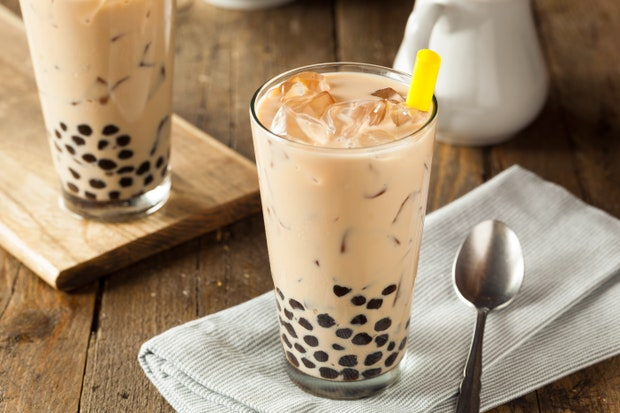

Bubble Tea
The Asia's Best

Bubble Tea so tasty so yummy.
What is Bubble Tea?
- also known as Pearl Milktea, Bubble Milk Tea, Booba.
- is a tea-based drink that originated in Taiwan in the early 1980s.
- It most commonly consists of tea accompanied by chewy tapioca balls ('booba' or 'pearls), but it can be made with other toppings as well.
- There is a common misconception that the name 'bubble tea' refers to the appearance of the pearls (or boba), but it originates from the appearance of bubbles in the milk and tea blend after it is removed from the shaking machine.
- Bubble tea has many varieties and flavors, but the two most popular varieties are black pearl milk tea and green pearl milk tea with tapioca balls at the bottom.
We got no troubles, life is the bubbles.